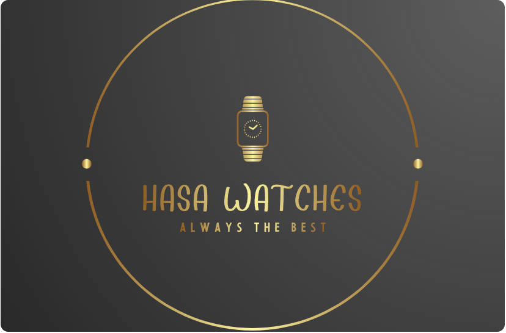

The Founders of the company began with the idea that every person should have a watch they can wear which doesnt make a hole in their poket.
When ever a person wanted to buy a reasonable watch that looked like it was tailored to them, this was nearly impossible in the current condition of the market.
We saw this problem as we were also the ones that were facing them as a customer and founded HASA Watches. This Company is dedicated to gather the best inventory
of watches in the market to give it's customers the best products. We as a company share the same compassion for watches like our customers and believe to make this
company a customer driven company.
While we are proud of selling only the best of watches online to all people Australia-wide, we share a lot of compassion for conserving the enivronment.
We as company only use Bio-degardable.
Along with this, we belive in giving back to the community. As of now, more than 50% of the profits are being donated to local charities which can help in the upliftment of
lives.
There is a very famous saying that we follow: "Its not your or my community, its our community."
